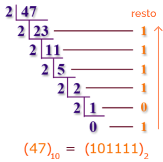
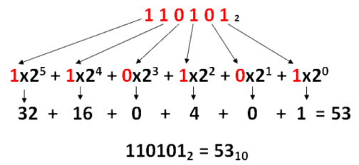

Sistema Binário
Sistema usado para linguagem de máquina. Se faz necessário usar código binário, que é composto por apenas dois números, 0 e 1, ele representa todos os caracteres, incluindo letras, caracteres especiais e números. Essa limitação numérica reflete a natureza binária dos computadores, que interpretam apenas a presença ou ausência de energia.
Para processar informações, os valores do código binário representam dados. Um único ou 1 é chamado de bit, a menor unidade de informação do computador. Um conjunto de 8 bits forma um byte, que é usado para armazenar e transmitir dados de maneira mais eficiente. Existem unidades maiores de armazenamento, como o kilobyte (KB), megabyte (MB), gigabyte (GB) e terabyte (TB), cada uma sendo um múltiplo de bytes.
III A.C.
Pingalo descreveu um sistema numérico binário, representando os números de 1 a 8 apenas com os digitos 0 e 1.
Século XVIII
O sistema numérico binário moderno foi documentado pela primeira vez por Gottfried Leibniz.
1854
George Boole criou a Álgebra Booleana, que processa sinais usando e matemática, crucial na aplicação do sistema binário em circuitos eletrônicos.
1937
Claude Shannon se baseou na Álgebra Booleana para criar o computador digital e o projeto de circuito digital, que foi usado na IBM anos depois.

Conversão
Decimal para Binário
A conversão de decimal para binário (ou seja da base 10 para a base 2), consiste em dividir progressivamente o valor decimal por 2, obtendo-se um resultado e um resto. O resto em cada iteração terá sempre o valor de 0 ou 1. Deve-se dividir o número até que o quociente da divisão seja igual a zero.

Binário para Decimal
Para transformar o número binário em decimal (ou seja da base 2 para a base 10), você precisa multiplicar cada bit pela potência de sua posição e somar os resultados. Depois disso, basta fazer a soma dos fatores e confirmar o seu valor decimal.

OPERAÇÕES EM BINÁRIO
As operações em binário são similares às operações em decimal, porém utilizam apenas os dígitos 0 e 1.
- Adição
- Subtração
- Multiplicação
- Divisão
Quem somos
-
Arthur Oliveira
-
Cauã Jordão
-
Jamilla Lobo
-
Isabela Karla
-
Lucas Deodato
-
Luis Facunde
-
Milo Moreira
-
Sofia Travassos